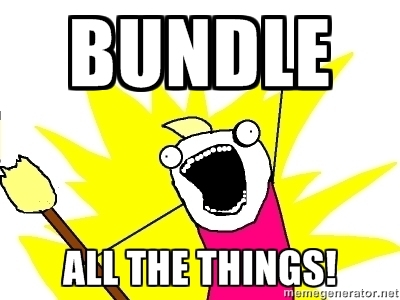

Modern JavaScript Development With ReactJS
A Crash Course
Topics At A Glance
- JavaScript
- NodeJS
- Webpack
- React
- What is it?
- Why use it?
- Sample Journal App
- Workflow Tips
About Me - John Arnold
- Programming for 25+ years, professionally for 10+ years
- Worked for companies ranging from 1-2 people startups, to Microsoft
- Latest focus is Web
- Still learning, every day
- Able to control this presentation with my watch
JavaScript is..
- High level, loosely typed, single-threaded*, functional
- Primary scripting language for the web
- Based on ECMAScript (ES), most browsers support ES5 and are starting to implement ES6
ES6 / ES2015
- ES2015 offers many improvements for developers using JavaScript
- Check out es6fiddle.net for examples
- Unfortunately browser support is still WIP..
- Fortunately thanks to tools such as Babel, we can use it today!
NodeJS

- Run JavaScript on the server
- Based on Chrome's V8 JavaScript engine
NPM
- Node comes with NPM, a package manager for JavaScript
- Both the command to be run, and a public repository of modules available on www.npmjs.com
- Works with the file package.json
- Installs modules into node_modules folder
Webpack
- Supports the most common module styles (CommonJS, AMD, and ES2015 Import)
- Performs module bundling
- Keeps initial page loading times down
- Allows chunks to be loaded on demand
- Supports many types of resources through loaders
- Built-in source maps
- webpack-dev-server speeds up development with in-memory bundles and auto-refresh
What is it?
- JavaScript library for building user interfaces
- Originally created at Facebook, open sourced in 2013
- Everything is a component
- Components only need at minimum a render function
- Components are composable
- One-way data flow
- Declarative & Reactive
- Virtual DOM
- Optionally uses JSX for component rendering
Why use it?
- The way it makes you think
- Developer ergonomics
- Easy to learn
- Popular
- Good performance
Time to look at some code!
- Starting with the first examples on the official React home page
- And then on to our sample app..
React Tutorial Journal App
A client-side app to let you write and display journal posts.
Source available on Github.
- Within the app, a user can..
- submit a new post
- view posts
- edit a post
- delete posts
- filter posts
The First Commit
- Initial Project Setup
- Webpack
- ESLint
- React, Render Hello World
The Big One
- Add and View Posts
- Functional stateless components
- Data in React: Props vs State, Parents and Children
- Stateful Component, "Smart" vs "Dumb" Components
- Events in React
- Styles in React
- ES2015 + ES2016 Features:
- ES2015 Classes
- ES2015 Arrow functions
- ES2015 Destructured assignment
- ES2016 Function bind operator
- ES2016 Property Initializers
The Post Editing Commit
- New State Var: EditPostIx
- Refactor
- New Event handlers
- Use Constants When Appropriate
- FontAwesome Icon
Deleting Posts
- Simple Splice
Persist Posts
- HTML5 LocalStorage
- componentWillMount
Markdown Support
- Add a new dependency, and use it
- npm install --save marked
Filtering
- Notice again when sibling components both need data, then it belongs in their parent (filterText)
- Filtering itself is performed with a very simple function
- Regex
In closing..
- Check out the code on Github, follow the steps in the README to create your own project using the same tools
- React Resources:
- Thinking in React
- React Discussion Forums
- IRC: #reactjs on Freenode
- Reactiflux React Community (Webchat)
- Flux
- Questions?